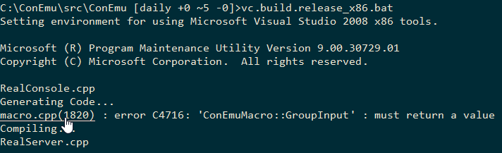

ConEmu has ability to highlight hyperlinks, files and compiler errors (file+line_number). Just hover mouse with ‘Ctrl’ pressed. May be configured on Highlight settings page.

Examples:
Note! File will not be highlighted if ConEmu can't find it in the shell's current directory.
Action: File will be opened in the specified editor on the proper line if possible.
File names or full paths produced from ‘dir’, ‘ls’, ‘git status’, ‘git diff’ and so on.
Note! File will not be highlighted if ConEmu can't find it in the shell's current directory.
Action: will be opened in the default program (ShellExecute).
Examples:
Action: will be opened in the default program (ShellExecute).